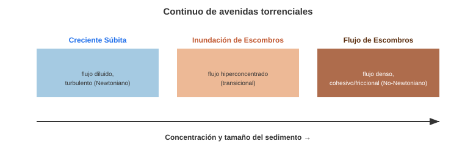
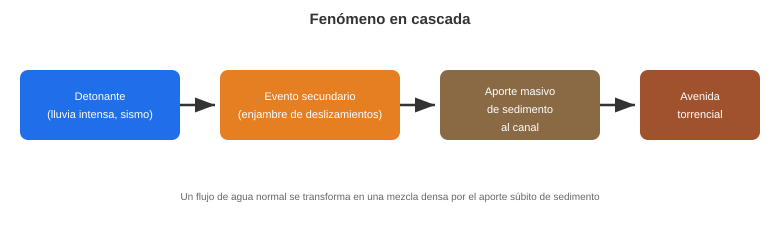
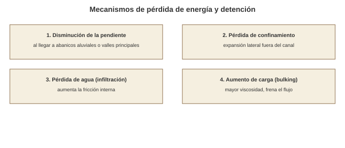
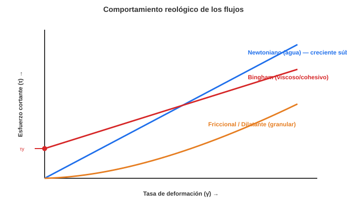
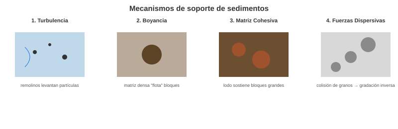
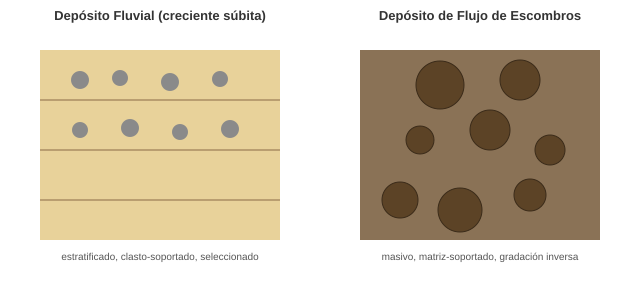
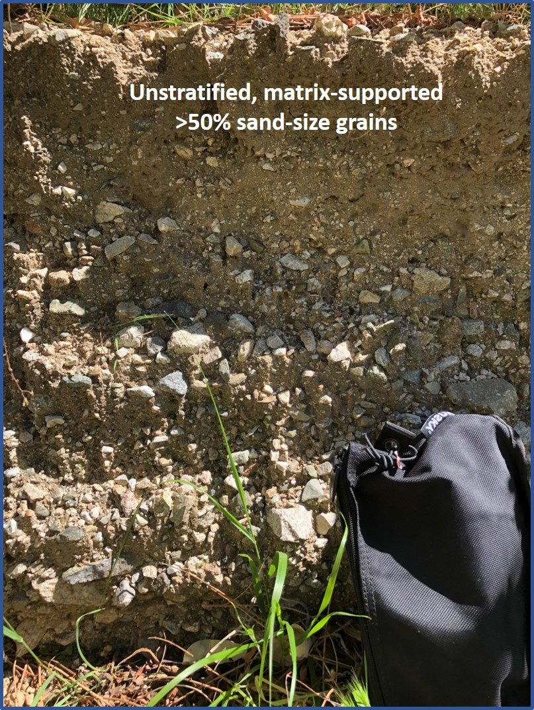

Ambientes Torrenciales#
Este documento explora los fenómenos conocidos como avenidas torrenciales o flujos de escombros desde una perspectiva geomorfológica, con énfasis en su definición, procesos y las fuerzas que los gobiernan.
1. Definiciones#
El término “avenida torrencial” es amplio y su definición ha sido objeto de debate.
Una descripción general los define como una mezcla de agua y sedimentos en diferentes proporciones, que se desplazan velozmente a lo largo de cauces en cuencas de montaña.
Dada la falta de consenso en Colombia, Aristizábal et al. [2020] proponen usar el término avenida torrencial para describir flujos formados por una mezcla de sedimentos y agua que se mueven a gran velocidad por cauces de montaña, y que son detonados por uno o varios de los siguientes eventos:
Lluvias concentradas intensas o lluvias antecedentes.
Enjambres de movimientos en masa.
Sismos.
Rotura de presas (naturales o artificiales).
Aporte de grandes volúmenes de agua por fusión de glaciares.
Estos autores proponen clasificar las avenidas torrenciales en tres tipos principales, que representan un continuo de procesos:
Creciente Súbita (o Inundación Súbita)
Inundación de Escombros
Flujo de Escombros
{kind=link}

Fig. 109 Continuo de avenidas torrenciales según la concentración y el tamaño del sedimento transportado. Elaboración propia con base en Aristizábal et al. [2020].#
2. Diferencias de Percepción: Geólogos vs. Hidrólogos#
La falta de consenso sobre el término se debe, en parte, a las diferentes perspectivas disciplinares:
Geólogos: Tienden a entender las avenidas torrenciales como fenómenos gravitacionales, asociándolos a movimientos en masa. Por ejemplo, Ingeominas (2001) las definió como “fenómenos de remoción en masa”.
Hidrólogos: Las interpretan como fenómenos hidrológicos, asociándolas a crecientes súbitas. Por ejemplo, los POMCA (Planes de Ordenación y Manejo de Cuencas) las definen como “inundaciones de tipo fluvial rápidas” o “crecientes súbitas”.
Esta dicotomía ha llevado a metodologías de evaluación de amenaza muy diferentes: los geólogos se centran en la estabilidad de laderas y el aporte de sedimentos, mientras que los hidrólogos se centran en la respuesta hidrológica de la cuenca.
3. Características Fundamentales#
Independientemente de la definición, toda avenida torrencial comparte tres componentes esenciales que deben estar presentes:
Agua: El agente de transporte, usualmente aportado por lluvias intensas, deshielo o rotura de presas.
Sedimentos: Una alta carga de material sólido (desde arcillas hasta bloques métricos) aportado por la erosión del cauce o por erosión pluvial o movimientos en masa.
Canales de Fuerte Pendiente: El escenario donde ocurren. La alta pendiente es necesaria para proveer la energía gravitacional que moviliza la mezcla a gran velocidad.
4. Causas y Eventos Concatenados (En Cascada)#
Las avenidas torrenciales raramente tienen una sola causa; son el resultado de un fenómeno en cascada.
Los detonantes principales (lluvia, sismos, etc.) no siempre causan el flujo directamente. A menudo, un evento primario (lluvia intensa) genera eventos secundarios (enjambres de movimientos en masa en las laderas), los cuales suministran una cantidad masiva de sedimentos al canal. Este aporte súbito de material transforma un flujo de agua normal (creciente súbita) en una mezcla densa (inundación o flujo de escombros).
{kind=link}

Fig. 110 Fenómeno en cascada: un detonante genera eventos secundarios que aportan sedimento y transforman el flujo. Elaboración propia con base en Aristizábal et al. [2020].#
5. Tipos de Avenidas Torrenciales y Pérdida de Energía#
Aristizábal et al. [2020] proponen la clasificación de creciente súbita, inundación de escombros y flujo de escombros. Estos tipos representan un continuo basado en la concentración y tamaño del sedimento.
Un flujo torrencial pierde energía y se detiene principalmente por:
Disminución de la Pendiente: Es el factor principal. Al llegar a zonas de menor gradiente (abanicos aluviales, valles principales), la gravedad ya no puede sostener el movimiento.
Pérdida de Confinamiento: El flujo sale de un canal estrecho y se expande lateralmente, disipando su energía sobre un área mayor.
Pérdida de Agua (Infiltración): El agua se infiltra en el lecho, aumentando la fricción interna y “congelando” el flujo.
Aumento de Carga (Bulking): La erosión de más sedimento puede, hasta cierto punto, aumentar la fricción interna y la viscosidad, frenando el flujo.
{kind=link}

Fig. 111 Mecanismos por los cuales una avenida torrencial pierde energía y se detiene. Elaboración propia con base en Aristizábal et al. [2020].#
6. Reología y Fuerzas Dominantes#
La reología (el estudio de cómo fluyen los materiales) es clave para diferenciar los tipos de flujos. Un flujo de agua (Newtoniano) se comporta muy diferente a un flujo de escombros (No-Newtoniano).
{kind=link}

Fig. 112 Comportamiento reológico (esfuerzo cortante vs. tasa de deformación) del agua (Newtoniano), un flujo viscoso/cohesivo (Bingham) y un flujo friccional/dilatante. Elaboración propia con base en O'Brien and Julien [1985].#
La siguiente tabla, adaptada de Aristizábal et al. [2020], resume las diferencias clave entre los tres tipos:
Característica |
Creciente Súbita |
Inundación de Escombros |
Flujo de Escombros |
|---|---|---|---|
Reología |
Newtoniano (turbulento) |
Transicional (hiperconcentrado) |
No-Newtoniano (viscoso/friccional) |
Concentración de sedimento |
Baja (<20% en volumen) |
Intermedia (20-47%) |
Alta (>47%) |
Mecanismo de soporte dominante |
Turbulencia |
Turbulencia + boyancia |
Matriz cohesiva + fuerzas dispersivas |
Depósito típico |
Estratificado, clasto-soportado |
Gradación normal, poco redondeado |
Masivo, matriz-soportado, gradación inversa |
7. Definición de Tipos de Flujo Reológico#
Flujo Turbulento (Newtoniano): Comportamiento del agua. La resistencia al flujo (esfuerzo cortante) es proporcional a la velocidad (viscosidad). Es un flujo diluido donde las partículas son transportadas por la turbulencia del fluido. Corresponde a las crecientes súbitas.
Flujo Viscoso (Cohesivo): Flujo dominado por una alta concentración de sedimentos finos (arcillas, limos) que forman una “matriz” cohesiva. La resistencia proviene de la viscosidad de este lodo.
Flujo Friccional / Dilatante (No-Newtoniano): Flujo dominado por la colisión y fricción entre los granos gruesos. El material debe expandirse (dilatarse) para poder moverse, generando alta resistencia interna.
Flujo Hiperconcentrado: Término intermedio entre un flujo de agua turbulento y un flujo de escombros. Es lo suficientemente denso para que los sedimentos afecten la reología, pero no tanto como para ser un flujo cohesivo o granular. Corresponde a la inundación de escombros.
8. Modelos Reológicos Propuestos#
Para describir matemáticamente estos flujos, se usan varios modelos:
Bingham (Plástico): El modelo no-newtoniano más simple. Asume que el material tiene una resistencia al corte inicial (\(\tau_y\)) que debe superarse para que comience a fluir (como la pasta de dientes). Una vez que fluye, se comporta como un fluido viscoso. \(\tau = \tau_y + \eta \dot{\gamma}\). Es ideal para flujos cohesivos.
O'Brien and Julien [1985]: proponen un modelo (a menudo cuadrático) que incluye componentes de resistencia viscosa, cohesiva, friccional y dispersiva.
Voellmy (Friccional-Turbulento): Usado para avalanchas. Combina un término de fricción seca (tipo Coulomb) y un término de arrastre turbulento (proporcional al cuadrado de la velocidad).
Herschel-Bulkley: Un modelo más general que el de Bingham. Incluye una resistencia inicial (\(\tau_y\)) pero permite que el fluido sea “pseudo-plástico” (la viscosidad aparente disminuye con la tasa de corte).
9. Mecanismos de Soporte de Sedimentos y Depósitos#
La capacidad de un flujo para transportar bloques gigantescos depende de cómo “soporta” los granos. Las fuerzas dominantes explican esto:
{kind=link}

Fig. 113 Los cuatro mecanismos de soporte de sedimentos en flujos torrenciales: turbulencia, boyancia, matriz cohesiva y fuerzas dispersivas. Elaboración propia con base en O'Brien and Julien [1985].#
1. Turbulencia: En crecientes súbitas, los remolinos del flujo levantan las partículas.
Depósito Resultante: Típicamente fluvial. Estratificado, clasto-soportado (los cantos se tocan entre sí) y con cierto grado de selección.
2. Boyancia (Flotabilidad): En todos los flujos densos, la densidad de la matriz fluida (agua + finos) es alta, lo que reduce el peso aparente de los bloques grandes, ayudando a que “floten”.
3. Matriz Cohesiva (Fuerza de la Matriz): En flujos de escombros cohesivos, la “pasta” de lodo tiene suficiente resistencia interna para mantener los bloques grandes en suspensión, impidiendo que se decanten.
Depósito Resultante: No estratificado (masivo), matriz-soportado (bloques grandes “flotando” en un lodo fino), muy mala selección, y a menudo con frentes de flujo lobulares y empinados.
4. Fuerzas Dispersivas (Presión Dispersiva): En flujos de escombros granulares, las colisiones constantes entre los granos grandes generan una presión que los mantiene separados (similar a agitar un tarro de nueces).
Depósito Resultante: A menudo presenta gradación inversa (los bloques más grandes son empujados hacia el frente y la superficie del flujo). Los depósitos de la inundación de escombros se describen como “bloques de tamaños heterogéneos poco redondeados, sin imbricación o estratificación horizontal y gradación normal”.
{kind=link}

Fig. 114 Contraste entre un depósito fluvial estratificado y clasto-soportado (creciente súbita) y un depósito de flujo de escombros masivo y matriz-soportado. Elaboración propia con base en O'Brien and Julien [1985].#
{kind=link}

Fig. 115 Sedimentos de flujo de escombros no estratificados y matriz-soportados, cañón Van Tassel, Azusa (California, EE. UU.). Fotografía: Francis Rengers, USGS Landslide Hazards Program (dominio público).#
Avenidas Torrenciales en Colombia#
Colombia es extremadamente vulnerable a estos fenómenos debido a su relieve joven y alta pluviosidad.
Eventos Emblemáticos: El flujo de detritos de Mocoa (2017) es uno de los más estudiados recientemente, demostrando el poder destructivo de los flujos de escombros en cuencas pequeñas.
Salgar (2015): Una avenida torrencial en la quebrada La Liboriana cobró decenas de vidas, resaltando la importancia de los sistemas de alerta temprana.
Puebla de Antón: En el suroccidente del país, los flujos torrenciales son recurrentes debido a la combinación de laderas empinadas y cenizas volcánicas inestables.
Taller de Autoevaluación#
Definiciones: Según Aristizábal et al. (2020), ¿cuál es la diferencia reológica fundamental entre una creciente súbita y un flujo de escombros?
Fenómeno en Cascada: Describa cómo una lluvia intensa puede desencadenar una avenida torrencial a través de un “enjambre de movimientos en masa”.
Mecanismos de Soporte: ¿Por qué un flujo de escombros puede transportar bloques de varios metros de diámetro que un río normal no podría mover? Mencione la boyancia y la fuerza de la matriz.
Depósitos: Si encuentra en el campo un depósito no estratificado, con bloques “flotando” en una matriz fina y sin selección, ¿qué tipo de proceso lo originó?
Disipación de Energía: Mencione tres factores que causan que una avenida torrencial se detenga al llegar a la parte baja de la cuenca.